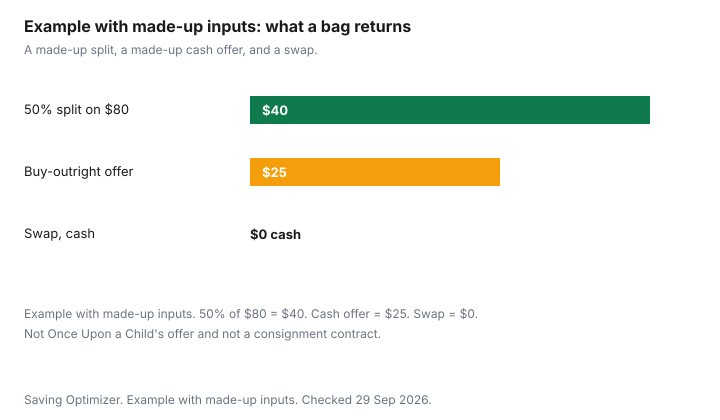

Clothing · Canada
Selling Kids' Clothes in Canada: Consignment, Resale Stores and Swaps Compared
A bin of outgrown clothes is not cash until someone accepts it and the fee, if any, comes off. The paths are different products. A resale store can pay cash on the spot and then own the clothes. A consignment shop can hold them and pay a split after a sale. An online listing can pay more and take an evening. A swap pays in clothes. A charity pays in a receipt only if that charity issues one. This page compares those paths with the terms that were on the pages checked 29 Sep 2026, and it does not turn a made-up split into a chain's policy. Buying for the child who is growing, including Ontario's point-of-sale rebate, is the kids' clothing budget. Selling adult clothes online is selling clothes online. Gift-only groups are Buy Nothing. Education only. Not tax advice.
Key takeaways
- Once Upon a Child's sell page says the stores pay cash on the spot, buy all seasons all day with no appointment, and buy preemie through youth size 20. They do not buy car seats, recalled items, or products that do not meet current government safety standards.
- That page is a buy-outright offer, not a consignment split you wait for. Each location is individually owned. Confirm the offer at the Canadian store you use before you treat the brand page as a contract.
- Poshmark Canada's Get Started guide: under C$20, a flat C$3.95. At C$20 or more, 20 percent of the listing price and you keep 80 percent. Listing is free. Withdrawals to a checking account are free on that guide.
- CRA's Completing Schedule 3 page: if both the adjusted cost base and the proceeds of personal-use property are $1,000 or less, you do not have a capital gain or loss and you do not report the sale on Schedule 3. Whether a string of sales is a business is a separate question. Confirm with the CRA.
- Example with made-up inputs: a bag that sells for $80 on a made-up 50 percent split returns $40. A made-up cash offer is $25. A swap returns $0 and a replacement garment.
Cash-on-the-spot resale stores vs consignment splits
Cash on the spot means the store buys the clothes from you and the risk of selling them moves to the store. You leave with money, or you decline the offer and take the bag home. Consignment means the store tries to sell your items and pays you a share of what they fetch, on a schedule the contract should state. You wait. You may also get the unsold items back, or you may not, depending on that same contract. A US chain page is not a Canadian term. Use the page for the store you will actually walk into.
Once Upon a Child's sell page, checked 29 Sep 2026, describes the cash path. Bring items in. The store reviews them while you look around. If you accept the offer, you are paid cash on the spot. The page says they buy all seasons, all day, every day, with no appointment. Sizes are preemie through youth 20. Items named are children's clothing, shoes, toys, and baby gear. The safety section says they are unable to buy car seats, recalled items, and products that do not meet current government safety standards. The brand homepage says each location is individually owned and operated. The offer you accept is the one that store makes that day. This guide does not cite a Canadian location's own payout formula, a percent of retail, or store credit, because those figures are not on the brand sell page. Ask at the counter.
A kids' consignment shop that is not Once Upon a Child will have its own split, its own consignment period, and its own rule for unsold items. This guide does not cite a Canadian kids' consignment contract, so it does not print a 50/50 or a 60/40 as that shop's term. Ask for the split, how long they keep the clothes, when you are paid, and what happens if the season ends with the item still on the rack. Write it down. Designer and adult consignment, which does have published Canadian splits, covered in the designer consignment guide, is consignment for designer and quality clothing.
What they accept and when (season windows)
Once Upon a Child's sell page says current, gently used items, all seasons, every day. It does not print a month when winter coats are refused, and it does not print a maximum age in years. "Current" and "gently used" are the standards on the page. Stains, broken zippers, and recalled products fail a shop even when the brand is on a popular-brand list. The page's brand list includes names such as Joe Fresh, George, and Gap. A name on that list is not a promise your item will be bought. Condition and what the store needs that week still decide the offer.
A local consignment shop may only take the season it can sell in the next two months. Coats in April and shorts in November are a common refusal, and they are a shop rule you have to hear from that shop. There is no national intake calendar here; ask your store. Phone before you sort for three hours. Laundry is the same: the Once Upon a Child page does not say the clothes must be washed. Bring them in a condition you would buy. If the shop you use posts a wash rule, follow that rule. Car seats stay home. The safety exclusion is on the brand page, and a buy-nothing or resale group is not a safer place to pass on a car seat either. Health Canada's used-equipment cautions live on the used household goods guide.
| Option | Payout | What they accept | Effort |
|---|---|---|---|
| Buy-outright resale (Once Upon a Child) | Cash on the spot if you accept the offer. No split is printed on the sell page. | Current, gently used children's clothing, shoes, toys, and baby gear. Preemie to youth 20. Not car seats, recalled items, or goods that fail current safety standards. | Sort, carry the bag in, wait while they review it. No appointment on that page. All seasons. |
| Kids' consignment shop | A split after a sale, on that shop's contract. This guide does not cite a Canadian kids' split. | Whatever that contract lists. Ask about season, brands, and stains. | Intake visit, then a wait, then a pickup of unsold items if the contract says they come back. |
| Online resale (Poshmark Canada) | Under C$20: you keep the price minus C$3.95. At C$20 or more: you keep 80 percent of the listing price. | What a buyer will pay for. You write the condition. Kids' sizes sell on the same fee rules as adult clothes on that guide. | Photos, a listing, a prepaid label, a drop at a mailbox if it fits or at Canada Post. |
| Local online sale | See the platform. This guide does not cite a Facebook Marketplace or Kijiji clothing fee. | What a local buyer wants. Meet in public. The used-goods guide covers payment cautions. | Messages, a meeting, no shipping if you sell at the door. |
| Swap or hand-me-down group | No cash. You leave with other clothes, or you gift them. | Buy Nothing groups are gift-only. A swap's condition rules are the host's. | Sort, show up, and accept that the return is a garment, not a deposit. |
| Charity | Not a purchase price. A receipt only if that organization issues one. Ask them, then confirm with the CRA. | What the charity's door accepts. Damaged clothes may be refused. | The drop-off. Less time than a listing, and no payout to enter in the chart's cash columns. |
Online local sales
Poshmark Canada's Get Started guide, checked 29 Sep 2026, says listing is easy and free. For sales under C$20, the fee is a flat C$3.95 and you keep the rest. For sales of C$20 or more, the fee is 20 percent of the listing price and you keep 80 percent. The guide says Poshmark handles the card transaction, provides a prepaid pre-addressed label, and provides support. You can withdraw earnings anytime for free, including a deposit to a checking account. The sell page adds that you get the parcel to Canada Post, or to a mailbox if it fits. Example with made-up inputs. A $15 listing is under C$20, so the fee is C$3.95 and $11.05 remains. A $20 listing is in the 20 percent band, so the fee is $4 and $16 remains. The $15 and the $20 are made up. The fee formula is the one on the Get Started guide. They are not a prediction of what a child's shirt will sell for.
The heavier work is the listing. Photograph the stain. State the size from the tag, not from memory. If your floor is the cash you need, work backward from the fee you have read. Marketplace and Kijiji are the local boards. This guide does not cite a clothing fee for either, so the keep amount is see the platform on the day you list. Meet where other people are, and do not ship a parcel to a stranger off-platform because a message asked you to. The used household goods guide is the payment-caution version of that conversation. The online selling guide compares the adult platforms in more detail, including what it does not cite.
Charity and swaps
A swap and a hand-me-down group solve a different problem from a resale store. You need clothes for the next size more than you need a deposit. Buy Nothing, on its own guide, is a gift economy: you give the bin away, and you may receive the next size from someone else, with no price. A school or community swap often works the same way for an afternoon, with the host's rules on stains and on how many items you may take. Count that as a replacement garment, not as income.
Charity is the path when the clothes are clean enough to donate and you do not want to manage a sale. Value Village is a shop you can buy from. Donating there is not the same transaction as selling to Once Upon a Child, and this page does not cite a cash payout for a donation bag. If you want a tax receipt, ask the organization whether it issues one, and ask the CRA whether that receipt is something you can use. This guide does not value a bag of used clothes for you.
Expected payouts vs effort
Effort is the hour you spend sorting, driving, listing, and waiting. A small cash offer can still be the rational choice when the alternative is another month of the bin in the hall. A higher online keep can be the wrong choice when the listing takes the evening you do not have. There is no published minutes-per-bag figure on the pages checked here. Time yourself once. That number is yours.
Example with made-up inputs. A bag the consignment shop sells for $80, on a made-up 50 percent split, returns $40. A made-up buy-outright offer on a similar bag is $25. A swap returns $0 in cash and a replacement outfit you did not have to buy. The $80, the 50 percent, and the $25 are not Once Upon a Child's offer and not a kids' consignment contract. They show why the cash column and the effort column can point at different doors. If the $25 offer takes 40 minutes and the $40 split takes a return trip next month, the household can prefer the smaller cheque. That preference is not a finding about Canadian parents.
On tax, do not treat any of those figures as a ruling. The CRA page Completing Schedule 3, checked 29 Sep 2026, says personal-use property is reported on line 9. If the adjusted cost base is less than $1,000, it is considered to be $1,000. If the proceeds are less than $1,000, they are considered to be $1,000. If both are $1,000 or less, you do not have a capital gain or a capital loss, and you do not report the sale on Schedule 3. The page's china-cabinet example uses that rule and tells the filer not to report a result of zero. You usually cannot deduct a capital loss on ordinary personal-use property. The page also says you must report a capital gain. A closet of outgrown clothes sold for less than you paid is the sort of case the page is describing, and it is still not this guide's conclusion about your return. Selling as a business, or buying in order to resell, is a different question from Schedule 3. This guide does not cite a dollar test that turns a garage clean-out into business income. Read the CRA pages on business income and on personal-use property, or ask a tax professional. The tax-credits guide is the household credit map, not a resale ruling.

Sources & date stamps
- Once Upon a Child, Sell To Us, onceuponachild.com/sell-to-us, checked 29 Sep 2026. Cash on the spot, all seasons, no appointment, preemie to youth 20, clothing, shoes, toys, and baby gear. No car seats, recalled items, or products outside current safety standards.
- Once Upon a Child homepage, onceuponachild.com, checked 29 Sep 2026. Locations described as individually owned and operated.
- Poshmark Canada, Get Started, poshmark.ca/posh_guide/get_started_on_poshmark, checked 29 Sep 2026. C$3.95 under C$20. 20 percent at C$20 or more. Free listing. Free withdrawal to a checking account. Prepaid label.
- Poshmark Canada sell page, poshmark.ca/sell, checked 29 Sep 2026. Prepaid label. Drop at Canada Post or a mailbox if it fits.
- Canada Revenue Agency, Completing Schedule 3, line 9 personal-use property, checked 29 Sep 2026. The $1,000 adjusted-cost-base and proceeds rules quoted above. Not tax advice.
Frequently asked questions
Where can I sell kids' clothes in Canada?
Once Upon a Child's sell page describes cash on the spot at its stores, and the brand says locations are individually owned. A local consignment shop, Poshmark Canada, a neighbourhood listing, a swap, and a charity are the other paths. Confirm the offer at the Canadian store you use. A brand page is not a contract with that counter.
How does consignment pay?
The shop sells the item, then pays the split in the contract, on the schedule the contract names. Once Upon a Child's sell page is a different model. It says cash on the spot if you accept the offer, and it does not print a split. This guide does not cite a Canadian kids' consignment percent. Ask the shop for the split, the holding period, and what happens to unsold items.
Is it better to sell or swap?
Sell when you need the money and a buyer exists. Swap, or give through a Buy Nothing group, when you need the next size more than a deposit. Example with made-up inputs: a 50 percent split on an $80 sale is $40, a cash offer of $25 is $25, and a swap is $0 plus a replacement garment. Those figures are not a store's terms.
What condition do stores accept?
Once Upon a Child says current, gently used clothing, shoes, toys, and baby gear, from preemie to youth 20, all seasons, with no appointment. They do not buy car seats, recalled items, or products that fail current safety standards. A name on their brand list is not a promise they will buy your item. Other shops post their own condition rules. Ask.
Do I pay tax on money from selling used clothes?
This guide does not decide that. The CRA's Completing Schedule 3 page says that if both the adjusted cost base and the proceeds of personal-use property are $1,000 or less, there is no capital gain or loss and you do not report the sale on Schedule 3. A business that buys in order to resell is a different question. Confirm with the CRA or a tax professional. Not tax advice.
Researched and drafted with AI assistance and fact-checked against official Canadian sources. How we create content.